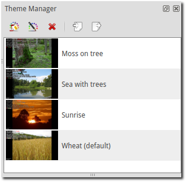

Themes
The Theme Manager is where you can set backgrounds, fonts, and colors to the style you desire. From the theme manager you can create a new theme, Edit a theme, Delete a theme, Import a theme, and Export a theme.
Creating New Themes
- Create a new theme:
- This will bring up the Theme Wizard
Click Next. You have 4 choices in the drop down menu for Background type: Solid Color, Gradient, Image or Transparent.
- Solid color:
- Select solid color and click on the black button next to Color. You have the option of choosing among the colors you see or entering your own.
- Gradient:
- Choose the two colors, Starting color and Ending color that you want to fade together and the Gradient drop down will let you determine the directions of the fade.

- Image:
- You have the ability to use an image for your background. OpenLP accepts a variety of image types. JPG is the most common format of images but can cause previews to be slow. If you experience this you may want to convert your image to PNG as it previews quicker than other formats.
- Background color:
- Choose the color that will appear on the borders if your image is smaller than your projector display setting.
- Image:
- Click
 to find and select your image.
to find and select your image.
Note: When possible, try to use the same size image as your projector is displaying unless you want a background color for a border.
- Transparent:
- Using the transparent theme will use whatever wallpaper or background color that your desktop is using for the theme background.
When finished with your selection for background, click the Next button.
Main Area Font Details
This is the area where you will select and define your font characteristics for the Display text.
- Font:
- Choose the font you would like to use from the drop down.
- Color:
- Choose the color of your font.
- Size:
- The size of your font determines how many lines are shown per slide. As you change the font size, the lines per slide will change.
- Line Spacing:
- This setting determines how much space you want between lines. This setting will also change the lines per slide.
- Outline:
- If you desire an outline around your font, select the Outline box, choose your color and size of the outline.
- Shadow:
- If you desire a shadow around your font, select the Shadow box and choose your color and size of the shadow.
- Bold Display:
- Select the box for Bold font
- Italic Display:
- Select the box for Italic font
When you are finished selecting your font details click the Next button.
Text Formatting Details
This page determines the alignment of the text on your slide and the transition from one slide to the next.
- Horizontal Align:
This moves the text to the Left, Right, Center or Justify on the screen.
Note: Text is only justified when the text does not fit on one line, (only when a line is wrapped).
- Vertical Align:
- This moves the text to the Top, Middle or Bottom of the screen.
- Transitions:
- When this box is selected, switching slides will fade out from one and fade in to the next. When the box is not selected, slide changing will be instant.
When you are finished setting your Text Formatting Details, click Next.
Output Area Locations
This page gives you the ability to change the position of your main area and footer area to a specific location on the screen using the X and Y positions or a specific size using width and height. (e.g. if you have a theme image with a border around it and do not want your lyrics to be displayed over top of the border or if you do not want your footer displayed on the bottom left, you can make the adjustments here).
To view your main and footer layout positions click Layout Preview. The blue outlined area shows the position of the main window and the red outlined area is the position of the footer area. To go back to the previous window click OK
To change the default locations or sizes of the main and footer area toggle off the Use default location on the main area or footer area by clicking on the checkmark. This will unlock the X and Y positions and the width and height. You will now be able to change the settings.
Click Layout Preview to view the changes made.
When you are satisfied with the settings of your Output Area Locations, click Next.
Save and Preview
- Theme Name:
- Enter your theme name here.
- Preview:
- The Preview shows the choices you made when setting up the previous pages plus, shows all the edit effects possible so you can see what the impact is on all possible font colors and characteristics.
When you are satisfied with your selections, click Finish. If you want to make a change, use the Back button.
Editing Themes
Now that you created your theme and you display it on the projector and there is
something you don’t like, you can easily Edit your theme either by clicking
the  Theme Edit Button or by right-clicking your theme and selecting
the appropriate action.
Theme Edit Button or by right-clicking your theme and selecting
the appropriate action.
Deleting Themes
 Delete a theme:
Delete a theme:- Delete a selected theme or you can right-click your theme and select Delete.
Note: You cannot delete the theme currently selected as global or default.
Exporting Themes
If you would like to transfer a theme from one computer to another, click on
the theme you want to export, click  and choose the folder you
want to save your theme in and click OK.
and choose the folder you
want to save your theme in and click OK.
Importing Themes
To import a theme that has been previously exported, click the import button
 and select the folder and the theme file, and click OK.
Your imported theme will be entered in the Theme Manager. Import Theme will
also handle version 1 Exports. You will need to check your imported theme since
many of the values will have been defaulted.
and select the folder and the theme file, and click OK.
Your imported theme will be entered in the Theme Manager. Import Theme will
also handle version 1 Exports. You will need to check your imported theme since
many of the values will have been defaulted.
Rename Theme
If you created a theme and want to change the name of it, right-click your theme and click Rename theme and enter the new name.
Note: You cannot rename the theme currently selected as global or default.
Copy Theme
Now that you created a theme with all the attributes you like, you can right-click the theme, click on Copy theme, choose your new name and click OK. You now have a duplicate of your first theme that you can edit the way you want.
Set as Global default
If you right-click your theme, you have the option to set the theme as Global default. This option is covered in greater detail under Configuring OpenLP.